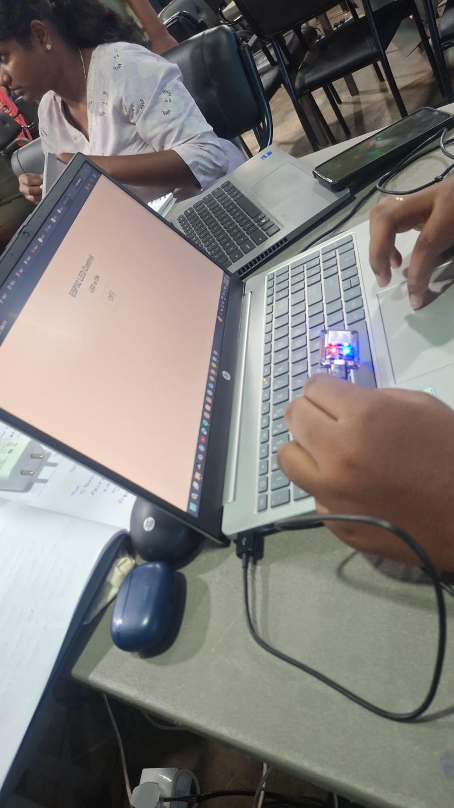

Project media
Built, programmed, and tested
A look at the ESP32 setup, the Arduino sketch, and the working LED control demo.


Task 1
Project media
A look at the ESP32 setup, the Arduino sketch, and the working LED control demo.

The HTTP LED Web Control project is a local-network IoT application developed using an ESP32 microcontroller. The system connects the ESP32 to a Wi-Fi network and configures it as a lightweight HTTP web server.
A user can access the ESP32 from a web browser using its local IP address and control the onboard LED in real time. The project demonstrates how an embedded microcontroller can communicate with a web-based interface without requiring an external cloud platform.
The system combines embedded programming, Wi-Fi networking, HTTP communication, REST-style API design, GPIO control and front-end web development into a single IoT application.
The primary objective was to develop a simple but complete IoT communication pipeline in which a web browser can control a physical output of an ESP32 through a local Wi-Fi network.
The project was designed to understand:
The complete communication flow is:
User → Web Browser → Wi-Fi Network → ESP32 Web Server → HTTP API → GPIO 2 → Onboard LED
Component | Purpose |
ESP32 Dev Module | Main microcontroller and web server |
Onboard LED | Physical output for testing GPIO control |
USB Cable | Programming and power |
Wi-Fi Router / Hotspot | Local network communication |
Computer / Smartphone | Web-based control interface |
No external circuit or additional wiring is required because the onboard LED is used for the initial prototype.
Data flow: Browser → Wi-Fi router → ESP32 web server → GPIO 2 → onboard LED.
The ESP32 first connects to the local Wi-Fi network using the WiFi.h library.
The firmware contains the Wi-Fi credentials:
const char* ssid = "YOUR_WIFI_NAME";
const char* password = "YOUR_WIFI_PASSWORD";
The ESP32 attempts to connect using:
WiFi.begin(ssid, password);
The connection is monitored until the ESP32 successfully joins the network.
Once connected, the local IP address is obtained using:
WiFi.localIP();
For example:
ESP32 IP Address: 192.168.1.105
This IP address acts as the local network address through which other devices can communicate with the ESP32.
The ESP32 runs a lightweight HTTP server using:
WebServer server(80);
The number 80 represents the standard port used for HTTP communication.
The ESP32 continuously processes incoming HTTP requests using:
server.handleClient();
inside the main loop() function.
This allows the ESP32 to behave like a small embedded web server.
The project uses three HTTP GET endpoints to control and monitor the LED.
API Endpoint | HTTP Method | Function | Response |
/api/on | GET | Turns LED ON | JSON |
/api/off | GET | Turns LED OFF | JSON |
/api/status | GET | Returns current LED state | JSON |
Request:
GET /api/on
The ESP32 executes:
digitalWrite(LED_PIN, HIGH);
Response:
{
"led": "on"
}
Request:
GET /api/off
The ESP32 executes:
digitalWrite(LED_PIN, LOW);
Response:
{
"led": "off"
}
Request:
GET /api/status
The ESP32 reads the GPIO state and returns:
{
"led": "on"
}
or:
{
"led": "off"
}
The onboard LED is controlled through GPIO 2.
The pin is configured as a digital output:
const int LED_PIN = 2;
pinMode(LED_PIN, OUTPUT);
The LED can then be controlled using:
digitalWrite(LED_PIN, HIGH);
for ON and:
digitalWrite(LED_PIN, LOW);
for OFF.
This demonstrates the basic connection between software commands and physical hardware output.
GPIO 2 is commonly used for the onboard LED on ESP32 DevKit-style boards, but the exact onboard LED pin can vary between boards.
A web interface was developed directly within the ESP32 firmware using:
The interface contains:
[ LED ON ]
[ LED OFF ]
LED Status: ON
The user does not need a separate application. Any device connected to the same local Wi-Fi network can access the ESP32 through its IP address.
The web interface communicates with the ESP32 using JavaScript's fetch() function.
For example:
fetch('/api/on')
This sends a request to:
/api/on
The ESP32 processes the request and returns a JSON response.
The JavaScript then reads the response:
.then(response => response.json())
.then(data => {
updateStatus(data.led);
});
This creates a direct communication path between the browser interface and the physical ESP32 hardware.
To keep the web interface synchronized with the ESP32, the project implements periodic polling.
The browser checks the ESP32 status every:
500 milliseconds
using:
setInterval(checkStatus, 500);
The browser repeatedly requests:
/api/status
The ESP32 responds with the current LED state.
This allows the displayed status to automatically update without manually refreshing the browser.
User clicks "LED ON"
↓
JavaScript Fetch API
↓
GET /api/on
↓
ESP32 WebServer
↓
handleLEDOn()
↓
digitalWrite(GPIO 2, HIGH)
↓
Physical LED turns ON
↓
ESP32 sends JSON response
↓
{"led":"on"}
↓
Browser updates status
User clicks "LED OFF"
↓
JavaScript Fetch API
↓
GET /api/off
↓
ESP32 WebServer
↓
handleLEDOff()
↓
digitalWrite(GPIO 2, LOW)
↓
Physical LED turns OFF
↓
ESP32 sends JSON response
↓
{"led":"off"}
↓
Browser updates status
The system was intentionally designed to operate on a local network instead of depending on a cloud platform.
The architecture is therefore:
Browser
↕
Local Wi-Fi
↕
ESP32
↕
GPIO
↕
Hardware
rather than:
Browser
↕
Internet
↕
Cloud Server
↕
ESP32
Successfully developed a functional ESP32-based web-controlled IoT system in which a browser communicates directly with a microcontroller over a local Wi-Fi network.
The project demonstrates the complete chain from a web-based user action to physical hardware control, providing practical experience in integrating embedded systems with modern web technologies.
The same architecture can be extended beyond a single onboard LED.
1. Relay Control
Replace the onboard LED with a relay module to control suitable external loads.
Browser
↓
ESP32
↓
GPIO
↓
Relay
↓
External Device
2. Multiple GPIO Controls
Create separate API endpoints:
/api/gpio/2/on
/api/gpio/2/off
/api/gpio/4/on
/api/gpio/4/off
3. Sensor Monitoring
Add sensors such as:
The ESP32 could return sensor values through JSON APIs.
4. Mobile-Friendly Dashboard
Develop a responsive dashboard that can be accessed from smartphones and computers.
5. Authentication
Add username/password or token-based authentication before allowing device control.
6. Cloud Integration
The local HTTP architecture can later be connected to platforms such as MQTT brokers, Firebase or other IoT platforms when remote internet-based access is required.
Embedded Systems
ESP32 • GPIO • Microcontroller Programming • Arduino IDE
IoT & Networking
Wi-Fi • HTTP • REST API • TCP/IP • Local Network Communication
Web Technologies
HTML • CSS • JavaScript • Fetch API • JSON
Building this made the request/response cycle feel concrete instead of abstract. Every time I tap the toggle, the browser fires off a plain GET request to /on or /off, the ESP32's WebServer matches that path to a handler, flips the pin, and sends a short text response back ? there's no magic in between, just a tiny device on my network answering HTTP requests the same way a real web server would. Watching the Serial Monitor log each request as I clicked the switch made it obvious that the "web" here is really just my laptop and the ESP32 talking directly to each other over Wi-Fi.
If I were to take this further, I'd add proper state feedback instead of trusting the client-side toggle blindly ? right now the page assumes the request succeeded rather than confirming the LED's actual state. I'd also like to control more than one LED from the same page, and add at least basic authentication before opening this up to anything beyond a closed classroom network, since right now anyone on the same Wi-Fi can hit /on and /off with no login at all.